ROS 2 Jazzy, Gazebo Sim 8.15.0 and PX4 SITL course build: build guide
docs/results/.
"Measured" means read from the running simulation. "Recorded" means taken from a stored file of the original project.
The TinS-12E is a tracked ground vehicle (UGV). It carries a two-level carousel: two trays, A and B, slide horizontally and vertically past each other along a guarded route. Each tray holds four QAV250 quadrotors, so the vehicle has eight fleet positions. Only an aircraft on the upper, stationary tray can be released. In this build:
tins8ctl and from a GUI. Both use the same ROS services, action and topics.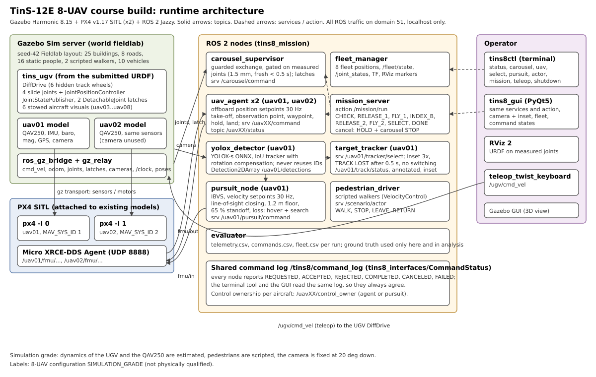
The source project has three parts: the AE 581 final submission (mechanical design, URDF, guarded-exchange register), the browser-based Fieldlab Mission Studio, and its Python backend. In the Mission Studio, the scene (buildings, roads, people, traffic) is generated in Python from a seed and drawn in the browser with three.js. A backend drives PX4 aircraft in a headless Gazebo. The course build re-creates that world natively in Gazebo, without the browser or the original workspace.
| reused component | where from (source project) | how it is used here |
|---|---|---|
| TinS-12E URDF, Xacro, STL meshes, collision register, guarded-exchange register (26 states) | submission folder 3 Mechanical Design / A - 8-UAV design (simulation-grade) / 4 URDF / src / tins_description (URDF SHA-256 67f4321b...bdbfd) | copied unchanged as package tins_description; the Gazebo model is generated from it (Section 6) |
| Fieldlab seed-42 layout | original scene generator (fieldlab_core.config.scene(), seed 42) | exported once to src/tins8_gazebo/data/fieldlab_scene_seed42.json; the world generator reads only this file |
| person, car, truck and bus meshes (CC0) | original Fieldlab asset set (MakeHuman hm08 derivatives, Kenney Car Kit 3.1, project bus) | Gazebo models human_mesh_0..3, car_mesh_0, truck_mesh_0, bus_mesh_0 |
| QAV250 Gazebo model and PX4 dynamics values (estimated) | original fieldlab_core/tins/qav250.py generator; sensor blocks from PX4 x500_base | models/qav250_reference; PX4 overrides in px4_qav250.params |
| YOLOX-s person detector (Apache-2.0) | opencv_zoo release, the same family as the original's person detector | src/tins8_mission/models/yolox.onnx (SHA-256 checked at load) |
Everything else was written new for this build: the ROS interfaces, all nodes, the world and UGV generators, the launch files, the scripts, the GUI and the tests.
The original backend has a follow mode and a close-approach mode for a selected person (backend follow.py, class Follow; service.py, class CloseApproach; recorded, read from the source files).
Simulation/artifacts/close-approach/validation-summary.json (passed; 8.02 s hold; minimum gap 0.61 m). It was not re-run for this guide.The course brief asks for a faster mode driven by YOLOX boxes alone: image-based visual servoing (IBVS) up to several m/s, with a 1.2 m floor and a 65 % frame-height standoff.
That mode is implemented as pursuit_node, controllable from its own terminal tab. Its behaviour in the new Gazebo build is reported separately in Section 8.
| item | version used for the recorded runs |
|---|---|
| OS | Ubuntu 24.04.5 LTS, kernel 7.0, X11 desktop session |
| ROS 2 | Jazzy (ros_gz_bridge 1.0.24, rviz2 14.1.24, vision_msgs 4.1.1) |
| Simulator | Gazebo Sim 8.15.0 (Harmonic), dartsim physics, ogre2 rendering |
| Flight stack | PX4-Autopilot v1.17.0 (commit d6f12ad), px4_sitl_default |
| DDS bridge | Micro XRCE-DDS Agent v2.4.3 (73622810); px4_msgs release/1.17 (86d8239) |
| Python | 3.12, OpenCV 4.6.0, NumPy 1.26.4, PyQt5 (Qt 5.15.13), matplotlib, PyYAML |
| Hardware | 16 GB RAM, 12 CPU threads, RTX 4050 laptop GPU plus an Intel iGPU (camera sensors rendered on the iGPU, real-time factor about 0.9 idle and 0.5 with both aircraft flying) |
Graphics: Gazebo camera sensors need OpenGL 3.3 (ogre2). A desktop GPU, laptop iGPU or NVIDIA driver all work. With no display, start with gz_gui:=false rviz:=false gui:=false; the cameras still render offscreen.
| dependency | reason | pinned revision | install | needed at |
|---|---|---|---|---|
| ros-jazzy-ros-gz, ros-gz-bridge, ros-gz-sim | Gazebo Harmonic and the ROS bridge | Jazzy apt | scripts/setup_deps.sh apt | runtime |
| ros-jazzy-vision-msgs | Detection2DArray for YOLOX boxes | Jazzy apt | same | runtime |
| ros-jazzy-robot-state-publisher, rviz2, tf2-ros | URDF on the measured joints, RViz view | Jazzy apt | same | runtime |
| ros-jazzy-teleop-twist-keyboard | UGV teleoperation | Jazzy apt | same | runtime |
| python3-opencv, numpy, scipy, yaml, pyqt5, matplotlib, pytest | YOLOX inference, GUI, analysis plots, unit tests | Ubuntu 24.04 apt | same | runtime (matplotlib and pytest: checks only) |
| gnome-terminal (or tmux) | tabbed launcher | apt | same | runtime, optional |
| PX4-Autopilot | SITL flight stack for the two aircraft | v1.17.0, d6f12ad1 | scripts/setup_deps.sh px4 | runtime (build needs PX4's own toolchain script) |
| Micro XRCE-DDS Agent | PX4 uORB to ROS 2 | v2.4.3, 73622810 | scripts/setup_deps.sh agent | runtime |
| px4_msgs | ROS message definitions matching PX4 1.17 | release/1.17, 86d8239e | scripts/setup_deps.sh msgs | build and runtime |
| google-chrome (headless) | rendering this guide to PDF | any recent | not installed by the scripts | documentation only |
No other toolbox or ROS package is required. Machine-specific paths go in scripts/local.env, which is not in Git, for example export TINS8_DEPS=/path/to/deps.
| Purpose | Create the colcon workspace, split responsibilities into packages, and define every interface before writing behaviour. |
| Working directory | the repository root (called tins8_ws below) |
| Terminal | any terminal |
| Files | src/tins_description (copied), src/tins8_interfaces/{msg,srv,action}, src/tins8_gazebo, src/tins8_mission, src/tins8_bringup, scripts/env.sh, scripts/build.sh |
git clone https://github.com/mohd-Ali04/Multi-UAV-UGV-System-.git tins8_ws cd tins8_ws scripts/setup_deps.sh all # apt (asks before sudo), PX4, agent, px4_msgs into ~/tins8_deps scripts/build.sh # colcon build of the 5 packages source scripts/env.sh # in every new terminal cd src/tins8_mission && python3 -m pytest -q test && cd ../..
Expected output: Summary: 5 packages finished, then 13 passed.
Check: tins8ctl --help lists the subcommands, and tins8ctl points prints op1, op2, three waypoints and two landing pads.
Isolation. env.sh sets ROS_DOMAIN_ID=51, ROS_AUTOMATIC_DISCOVERY_RANGE=LOCALHOST, GZ_PARTITION=tins8 and GZ_IP=127.0.0.1. Another ROS or Gazebo simulation on the same machine therefore never mixes with this one.
| package | type | contents |
|---|---|---|
| tins_description | ament_cmake | submitted URDF, meshes and registers, unchanged |
| tins8_interfaces | ament_cmake | 6 messages, 5 services, 1 action |
| tins8_gazebo | ament_cmake | world and UGV generators, generated SDF, models, assets and licences, scenario.yaml, GUI layout |
| tins8_mission | ament_python | 11 nodes, tins8ctl, tins8_gui, pure-logic modules (geo, ibvs, tracking, guarded_exchange, yolox), tests |
| tins8_bringup | ament_cmake | launch files, bridge map, PX4 parameter overrides, RViz config |
Topics carry continuous state. Services carry quick requests that are accepted or rejected at once. The two-aircraft mission is an action, because it reports progress and can be cancelled.
Every node also publishes each request's state on the shared /tins8/command_log, which is how the terminal tool and the GUI always agree.
| node | publishes | subscribes | serves |
|---|---|---|---|
| carousel_supervisor | /carousel/state (CarouselState, latched); /ugv/carousel/<joint>/cmd_pos; /ugv/latch/<uav>/detach | /ugv/joint_states; /ugv/latch/<uav>/state; /<uav>/status | /carousel/command (CarouselCommand): INDEX_TO_B_UPPER, INDEX_TO_A_UPPER, STOP, RELEASE |
| uav_agent (x2) | /<uav>/status (UavStatus); /<uav>/fmu/in/offboard_control_mode, trajectory_setpoint, vehicle_command | /<uav>/fmu/out/vehicle_local_position_v1, vehicle_status_v1; latch state; /<uav>/control_owner | /<uav>/command (UavCommand): TAKEOFF_HOLD, GOTO_OBSERVATION, GOTO_WAYPOINT, HOLD, LAND |
| yolox_detector (uav01) | /uav01/detections (vision_msgs/Detection2DArray, id = track ID); /uav01/detector/latency_s | /uav01/camera/image, camera_info; /uav01/fmu/out/vehicle_attitude | - |
| target_tracker (uav01) | /uav01/track/status (TrackStatus); /uav01/camera/annotated; /uav01/camera/inset | /uav01/detections; /uav01/camera/image | /uav01/tracker/select (SelectTarget) |
| pursuit_node (uav01) | offboard velocity setpoints; /uav01/control_owner; /uav01/pursuit/state | detections, camera_info, attitude, local position, status | /uav01/pursuit/command (PursuitCommand) |
| mission_server | action feedback | /carousel/state, /<uav>/status, /uav01/track/status | action /mission/run (RunMission); clients of the services above |
| pedestrian_driver | /model/<walker>/cmd_vel | /gz/dynamic_poses | /scenario/actor (ActorCommand): WALK, STOP, LEAVE, RETURN |
| fleet_manager | /fleet/state (FleetState); /joint_states; /fleet/markers; TF world, odom, base_link | carousel state, UAV status, /ugv/odom, /ugv/joint_states, /gz/dynamic_poses | - |
| evaluator | CSV files per run | command log, status, track status, fleet, ground-truth poses | - |
| gz_relay | /clock (10 ms resolution); /gz/dynamic_poses (named); /ugv/latch/<uav>/state (latched) | Gazebo: /clock, /world/<w>/dynamic_pose/info, latch state | - |
| ros_gz_bridge | /ugv/cmd_vel, /ugv/odom, /ugv/joint_states, tray cmd_pos, latch detach, /uavXX/camera/image and camera_info, walker cmd_vel (see config/bridge.yaml) | ||
PX4 1.17 publishes versioned topics such as vehicle_status_v1. The helper common.px4_topic() adds the suffix from each message's MESSAGE_VERSION, so the code also works with other PX4 releases.
| Purpose | Prove the Gazebo, PX4 and ROS chain with a single aircraft before the city and the carousel are added. |
| Working directory | repository root; one terminal per component, each after source scripts/env.sh |
| Files | worlds/minimal_px4.sdf (generated by scripts/build_world.py), models/qav250_reference, scripts/start_px4.sh, config/px4_qav250.params, uav_agent.py |
# terminal 1 (Gazebo) scripts/start_gazebo.sh minimal # terminal 2 (DDS agent) scripts/start_agent.sh # terminal 3 (PX4) scripts/start_px4.sh uav01 minimal # terminal 4 (nodes) scripts/start_nodes.sh world:=minimal # terminal 5 (controls) tins8ctl --wait uav uav01 takeoff tins8ctl --wait uav uav01 goto wp_road_east tins8ctl --wait uav uav01 land
How PX4 attaches. The aircraft already exists in the world. start_px4.sh sets PX4_GZ_STANDALONE=1, PX4_GZ_MODEL_NAME=uav01, PX4_SYS_AUTOSTART=4001, the DDS namespace uav01 and instance 0 (uav02 uses instance 1).
Parameters from px4_qav250.params are passed as PX4_PARAM_* and applied again through the PX4 client once it has booted.
That second pass is needed because PX4 does not store a value equal to the firmware default, so the airframe's param set-default NAV_DLL_ACT 2 would otherwise win and block arming with "No connection to the GCS".
Expected output. PX4 prints PX4_GZ_MODEL_NAME set, PX4 will attach to existing model, [tins8] re-applied 45 parameter overrides and Ready for takeoff!. Then:
ACCEPTED: take off and hold at z=3.1 m uav01 TAKEOFF_HOLD -> COMPLETED arrived at takeoff_hold, error 0.19 m; holding uav01 GOTO_WAYPOINT -> COMPLETED arrived at wp_road_east, error 0.10 m; holding uav01 LAND -> COMPLETED disarmed on the ground after AUTO_LAND
Check (measured, run minimal_flight):
Troubleshooting.
Preflight Fail: No connection to the GCS: the parameter re-apply did not happen; look for the [tins8] line.AMENT_TRACE_SETUP_FILES: unbound variable: a script sourced ROS under set -u; source env.sh before enabling strict mode./uav01/fmu/out/... topics: start the agent, and check that UDP port 8888 is free.| Purpose | Rebuild the browser world natively, with the same layout, scale and orientation, and run it without the browser or the original workspace. |
| Working directory | repository root |
| Files | src/tins8_gazebo/scripts/build_world.py (generator), data/fieldlab_scene_seed42.json (layout), config/scenario.yaml (points, walkers, pads), models/*, worlds/fieldlab.sdf (generated, committed) |
python3 src/tins8_gazebo/scripts/build_world.py # writes worlds/fieldlab.sdf and minimal_px4.sdf colcon build --packages-select tins8_gazebo scripts/start_gazebo.sh fieldlab # GUI opens behind the UGV python3 scripts/world_check.py # with the world running
The world uses the Fieldlab geodetic origin (lat 47.397742, lon 8.545594, alt 488 m), so PX4 GPS positions and world coordinates agree.
All model paths are model:// URIs, resolved through GZ_SIM_RESOURCE_PATH, which the package environment hook and env.sh set.
| Fieldlab component | source | Gazebo equivalent | status |
|---|---|---|---|
| ground plane (240 m, colour #abb093) | procedural (World.tsx) | 250 m plane, same colour | rebuilt |
| roads (8), lane dashes, shoulders | procedural, scene.roads | static boxes with the browser colours | rebuilt |
| buildings (25): body, roof slab, roof unit, windows | procedural boxes, scene.objects | static box stacks with collision, same footprint and height | rebuilt |
| people (18) | CC0 meshes from the asset set | 16 static human_mesh_* models; person_12 and person_9 are walkers | imported (meshes), converted (walkers) |
| walking people | backend actor poses, interpolated in the browser | VelocityControl models driven by pedestrian_driver on scripted loops | converted (scripted) |
| cars (4), trucks (3), buses (3) | CC0 meshes | mesh models with size-correct collision boxes | imported |
| moving traffic | backend city actors | vehicles are static | omitted (not needed for the assessed mission; it would add CPU load) |
| route line and stop rings | procedural | visual-only strips and rings | rebuilt |
| sidewalk networks, zebra crossings | procedural line sets | shoulders as boxes; crossings not drawn | partly rebuilt |
| carrier UGV (generic four-wheel carrier) | procedural boxes | the submitted TinS-12E (Section 6) | replaced on purpose |
| drones (procedural frames) | procedural | QAV250 models: 2 PX4 aircraft and 6 stowed visuals | replaced on purpose |
| AprilTag-style tags on the drones | PNG textures | not drawn | omitted (no marker detection in scope) |
| sky, fog, lights | three.js scene | Gazebo sun, ambient light, sky colour | rebuilt (approximate) |
| vegetation | none in the seed-42 browser scene | none | not applicable |
| observation points, waypoints, pads | new for the course | coloured discs and squares on the ground | new |
scripts/world_check.py reads every pose from the running world and compares it with the layout file. The full table is docs/results/world_check.md.
| kind | objects | max position error | max yaw error |
|---|---|---|---|
| building | 25 | 0.000 m | 0.00° |
| person (static) | 16 | 0.001 m | 0.00° |
| car / truck / bus | 4 / 3 / 3 | 0.000 m | 0.00° |
| distance | recorded | measured in Gazebo |
|---|---|---|
| UGV start to op1 / op2 (horizontal) | 16.28 / 44.18 m | 16.28 / 44.18 m |
| building_0 to building_1 / building_5 (centres) | 48.00 / 50.00 m | 48.00 / 50.00 m |
| Fieldlab start to stops alpha / bravo / charlie | 16.00 / 44.00 / 63.16 m | same |
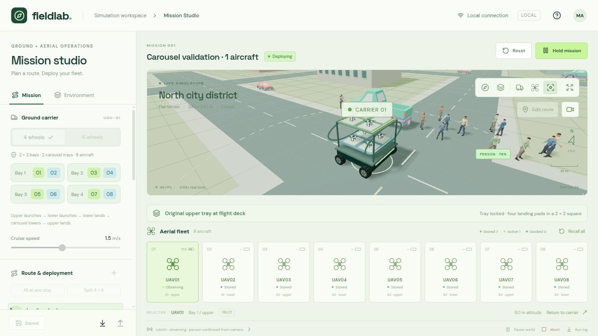
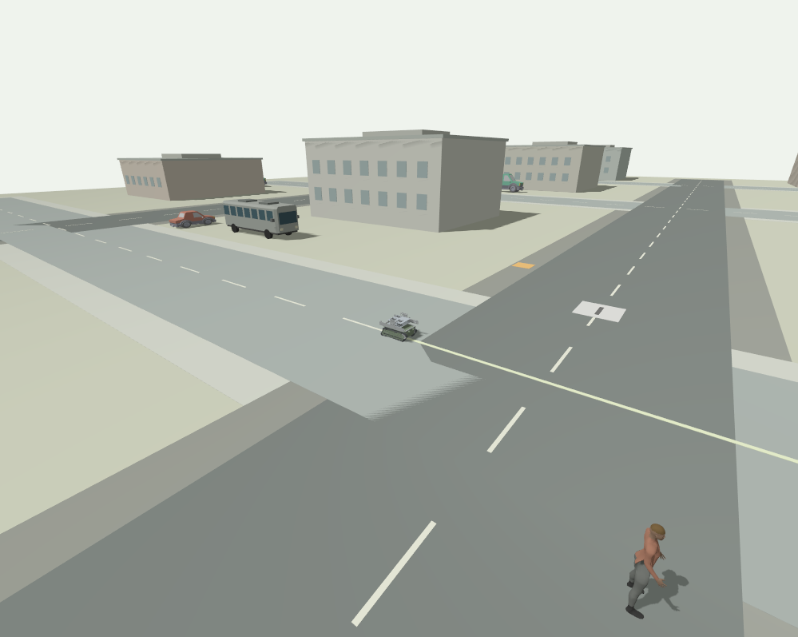
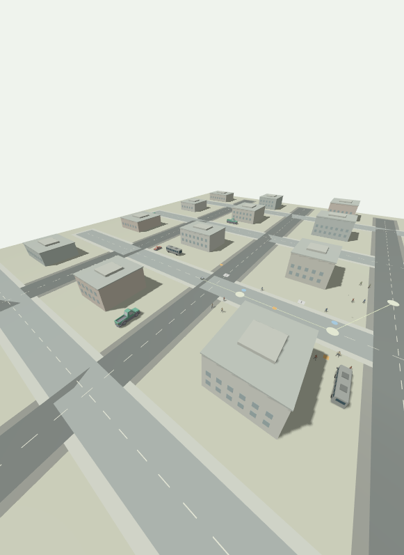
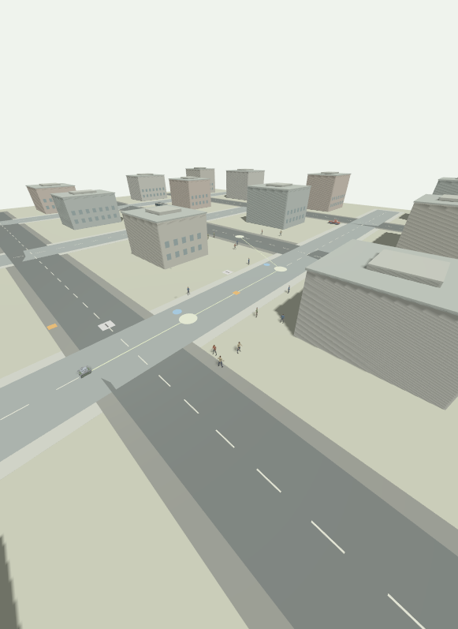
Troubleshooting.
GZ_SIM_RESOURCE_PATH is missing install/tins8_gazebo/share/tins8_gazebo/models; rebuild and source env.sh.gz sdf -k cannot find model://: it reads SDF_PATH; export the same path for validation.| Purpose | Turn the submitted URDF into a Gazebo model that drives, moves its trays on measured joint positions, holds two latched aircraft and shows all eight positions. |
| Working directory | repository root |
| Files | src/tins8_gazebo/scripts/build_ugv_model.py, models/tins_ugv/model.sdf (generated), carousel_supervisor.py, guarded_exchange.py, fleet_manager.py, config/bridge.yaml |
python3 src/tins8_gazebo/scripts/build_ugv_model.py # URDF -> SDF, prints the mass summary tins8ctl status tins8ctl carousel release uav02 # rejected at A_UPPER (interlock) tins8ctl --wait carousel index-b # guarded route, waypoints 1..12 tins8ctl carousel index-a # then: tins8ctl carousel stop / index-a to resume tins8ctl teleop # keyboard: i forward, j/l turn, k stop
/ugv/carousel/<joint>/cmd_pos, JointStatePublisher on /ugv/joint_states, and two DetachableJoint latches (tray A to uav01, tray B to uav02).RELEASE publishes detach, and the release only completes when the latch state reads detached.fleet_manager reports each slot as STOWED, ACTIVE_DOCKED or AIRBORNE.gz_relay therefore starts before the Gazebo server and re-offers the last state on a latched ROS topic.guarded_exchange_waypoints.yaml). It commands one waypoint at a time and advances only when all four measured joints are within 1.5 mm of the waypoint and the measurement is fresher than 0.5 s. Time is never used as completion evidence.Check (measured):
index-b passed all 12 measured waypoints in 57 s; at B_UPPER, tray A z = -155.0 mm and tray B z = +155.0 mm.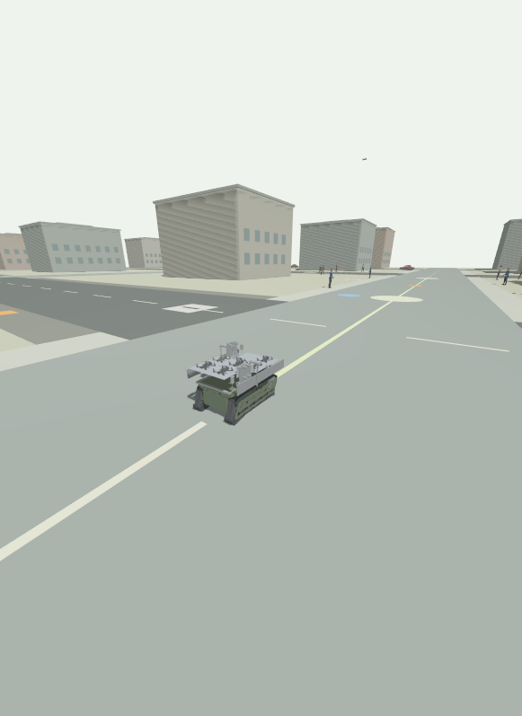
INDEX_TO_B_UPPER. The trays have moved apart along the guarded route; uav01 is already airborne and uav02 is still latched.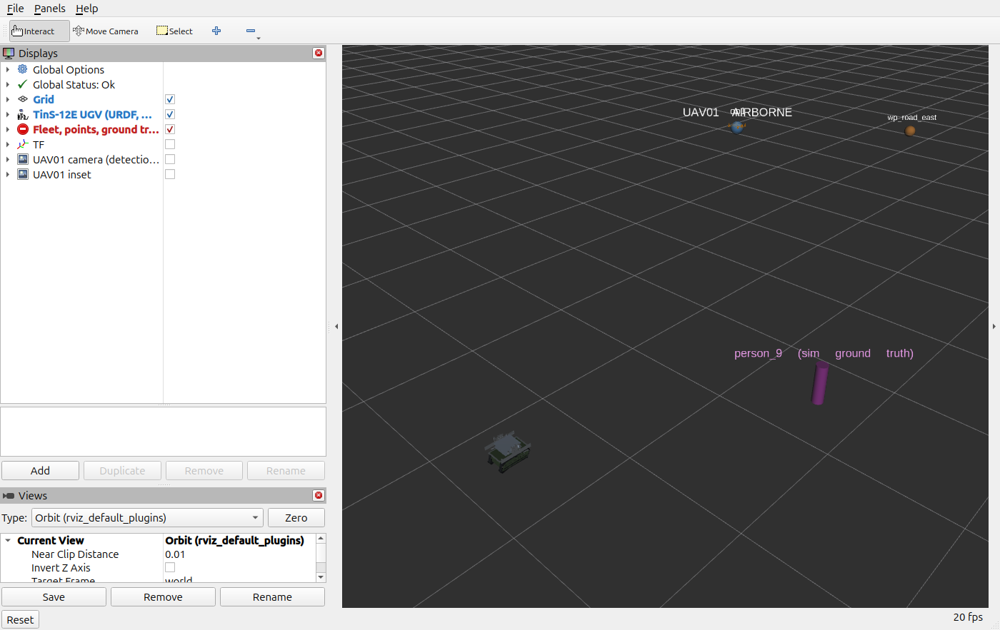
Troubleshooting.
latch state is unknown: gz_relay started after the world; restart the Gazebo tab.FAILED no measured progress (stall): something blocks a tray; clear it, then send the same index command to resume.| Purpose | Run the assessed mission. Select a pedestrian while two are visible, follow them in the inset, handle track loss, and show per-aircraft command isolation and cancellation. |
| Working directory | repository root. Terminal: the Controls tab. |
| Files | mission_server.py, uav_agent.py, yolox_detector.py, tracking.py, target_tracker.py, evaluator.py, scripts/analyze_run.py |
tins8ctl mission start --uav1 op1 --uav2 op2 # about 100 s; Ctrl+C cancels tins8ctl status # read the visible IDs tins8ctl select 45 # the ID shown on the pedestrian tins8ctl actor person_12 leave # walk out of view tins8ctl --wait uav uav02 goto wp_bus_stop # inspection waypoint, uav01 keeps holding tins8ctl --wait uav uav02 obs op2 python3 scripts/analyze_run.py log/runs/<run> # tables and plots
/mission/run: CHECK, RELEASE_1, FLY_1, INDEX_B, RELEASE_2, FLY_2, SELECT, DONE.
TRACK LOST, clears the inset and keeps the selection; it never switches to another person.mission1)| check | result |
|---|---|
| mission | COMPLETED in 101 s; uav01 HOLD at op1 (error 0.03 m), uav02 HOLD at op2 (error 0.19 m) |
| hold at op1, uav01 | estimate mean 0.02 m (max 0.18); ground truth mean 0.06 m (max 0.26); telemetry age max 0.33 s |
| selection to first centred inset | 0.25 s (two walkers in view; they pass close to each other) |
| tracked box is the intended walker | 845 of 845 TRACKING samples match person_12 by ground-truth projection; 0 match the other walker |
| inset centring error | median 0.4 px, 95th percentile 9.5 px (inset pixels) |
| track loss when the walker leaves view | TRACK LOST, selected ID stays 45 (no switch); 708 LOST samples |
| uav01 commanded hold during the whole test | drift 0.000 m |
| per-aircraft isolation | 4 of 4 commands: the other aircraft's phase, target and last command unchanged for 5 s |
| inspection waypoint | uav02 reached wp_bus_stop (error 0.16 m) and held, then returned to op2 |
cancel (run ops1) | cancel during INDEX_B: mission CANCELED, uav01 HOLD at op1, carousel STOPPED at its measured position; then resumed by hand |
landing cases (run ops1) | ground pad: land pad_west COMPLETED, 0.09 m from the pad centre; on the ground below: COMPLETED; on the UGV and re-stowage: REJECTED with the reason (not implemented) |
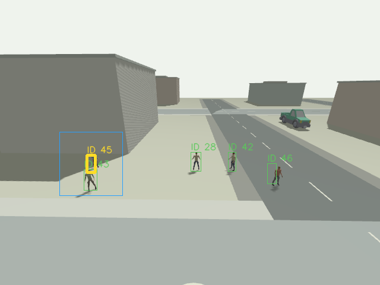
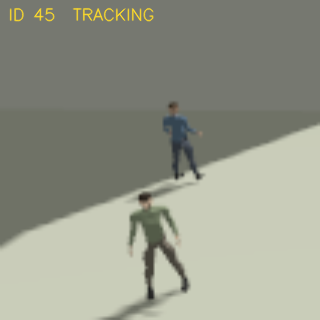
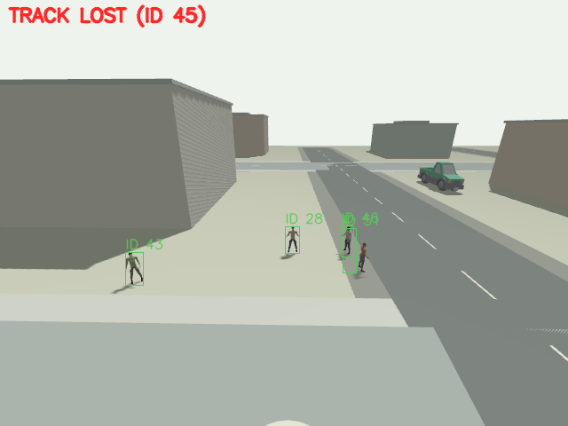
actor person_12 leave: TRACK LOST (ID 45). The other people keep their own IDs, and nothing is re-selected.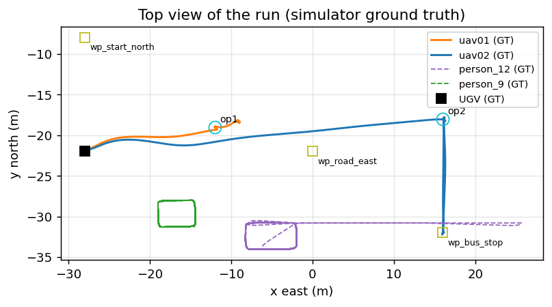
| Purpose | Close fast on the selected person using only YOLOX boxes, and end in a hover at the standoff. |
| Working directory | repository root. Terminal: a separate tab (the Controls tab, or any terminal after source scripts/env.sh). |
| Files | pursuit_node.py (ROS wrapper, failsafes, logs), ibvs.py (control law, unit tested), geo.py (frames); entry point in setup.py; started by launch/uav.launch.py |
tins8ctl select 8 # optional; it shows the same ID in the inset
tins8ctl pursuit uav01 start 8
tins8ctl pursuit uav01 stop # or: ros2 service call /uav01/pursuit/command \
# tins8_interfaces/srv/PursuitCommand "{engage: false}"
OffboardControlMode and TrajectorySetpoint at 30 Hz (measured mean 29.9 Hz in simulation time). On engage, the node takes setpoint authority from the agent through /uav01/control_owner.pursuit7)| metric | value | source |
|---|---|---|
| initial separation (uav01 at op1, 8 m up) | 15.1 m | ground truth |
| time to close to 5 m / 3 m / 2 m | 3.3 s / 9.4 s / 14.3 s | ground truth |
| time to terminal standoff (box ≥ 65 % of frame) | 24.9 s; estimated range then 1.42 m | pursuit log |
| peak closing speed / peak ground speed | 4.9 m/s / 4.1 m/s | pursuit log (estimated) |
| minimum separation / mean after first reaching 3 m | 1.47 m / 2.33 m | ground truth |
| minimum altitude | 1.45 m (floor 1.2 m) | ground truth |
| target in camera field of view | 99.3 % of samples; 0 losses in 77 s; maximum pitch 23° | pursuit log |
| horizontal centring error | mean 80 px, 95th percentile 203 px (640 px frame) | pursuit log |
The walker keeps walking its loop, so the aircraft trails at 2 to 3 m and reaches the 65 % standoff when the walker turns towards it. The centring error has a steady bias while the person crosses the frame, because the yaw lags a moving target. Both are reported as they are.
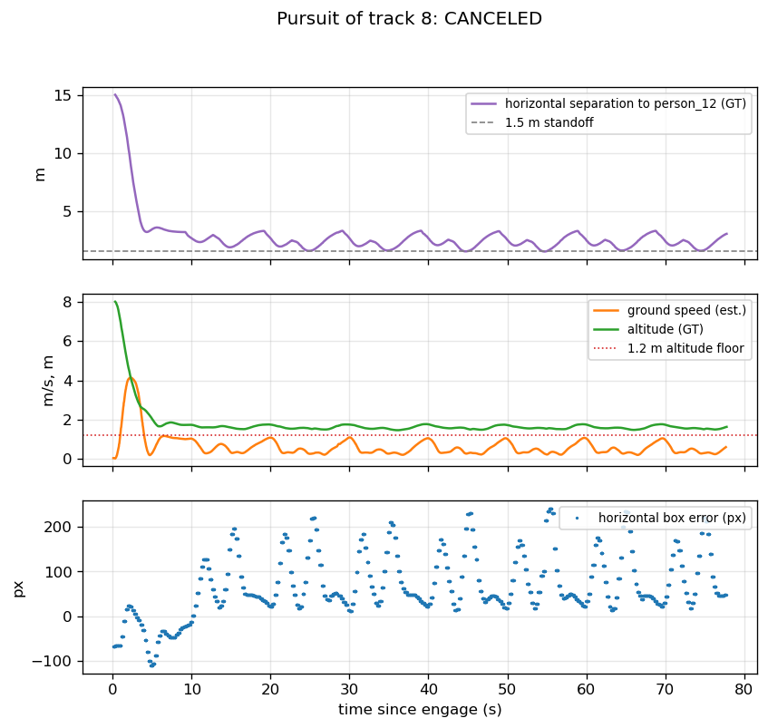
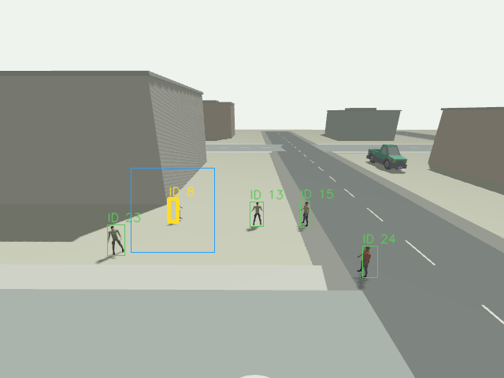
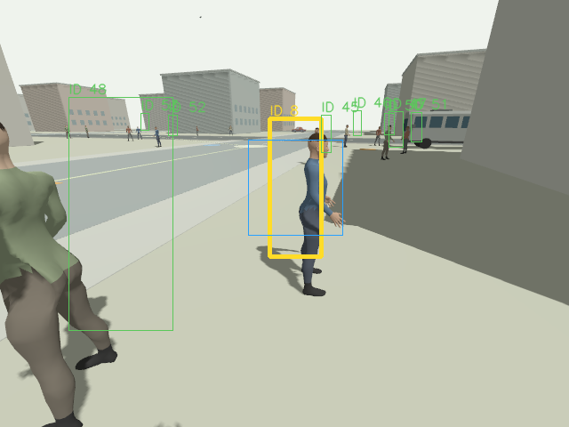
docs/results/pursuit_tuning)| attempt | what happened (measured) | change |
|---|---|---|
| 0 (mission1) | Lost after 1.3 s. YOLOX ran at 2.2 Hz while the aircraft yawed at 1.5 rad/s, so the boxes jumped about 150 px and got new IDs. | uav02 detector off by default (3.5 Hz); rotation-compensated tracker; bearing from the image-time attitude |
| 1 | Yaw now locked within ±6°, 6.2 m/s, but it overran: PX4 limited descent to 1 m/s. | MPC_Z_VEL_MAX_DN 2.5; forward taper on the elevation error; closing speed per detection |
| 2 | Still overran at 1.3 m altitude. | descent-time and braking limits |
| 3 | Went below the floor (0.87 m). | line-of-sight closing; anticipated floor |
| 4 | Overran at 4.9 m/s (latency). | range propagated by the image age; braking against the measured speed |
| 5 | Stopped at 2.3 m, but the nose-up braking pitched the walker out of the frame. | gentler braking; back away inside the standoff |
| 6 | Ground truth showed a pass within 0.28 m: the walker came towards the aircraft and the clipped box read too far. | clipped-box rule; range rate includes the walker's motion |
| 7 (pursuit7) | No loss in 77 s, minimum separation 1.47 m. | kept |
| Purpose | One entry point for the full simulation, a command for each component, named tabs, a GUI on the same interfaces, and clean shutdown and relaunch. |
| Files | launch/sim_all.launch.py, gazebo.launch.py, nodes.launch.py, uav.launch.py, rviz.launch.py; scripts/start_*.sh, run_tabs.sh, sim_all.sh, stop_all.sh; gui.py, cli.py |
scripts/sim_all.sh # everything in one terminal (gz_gui:=, rviz:=, gui:= true|false) scripts/run_tabs.sh # gnome-terminal tabs; scripts/run_tabs.sh tmux for tmux windows scripts/stop_all.sh # clean shutdown of this project only
| order | tab and command | ready when |
|---|---|---|
| 1 | Gazebo: scripts/start_gazebo.sh fieldlab | GUI shows the UGV; gz_relay logs uav01 latch: attached and uav02 latch: attached |
| 2 | DDS agent: scripts/start_agent.sh | prints a session line per PX4 instance |
| 3, 4 | PX4 uav01 / uav02: scripts/start_px4.sh uav01 and uav02 | Ready for takeoff! and [tins8] re-applied 45 parameter overrides |
| 5 | ROS nodes: scripts/start_nodes.sh | tins8ctl status shows 6 stowed, 2 active and fresh telemetry (age below 0.1 s) |
| 6 | RViz: scripts/start_rviz.sh | the URDF and fleet labels are visible |
| 7 | GUI: scripts/start_gui.sh | the camera image updates and the fleet table fills |
| 8, 9 | Teleop UGV: scripts/start_teleop.sh; Controls: scripts/controls.sh | prompt ready |
The GUI calls the same services and the same action as tins8ctl, and shows the shared command log with REQUESTED, ACCEPTED, REJECTED, COMPLETED, CANCELED and FAILED.
It was exercised through its own buttons with scripts/gui_click.py, which runs the same Window class offscreen and presses a button: start mission, Select ID, Hold, and Land with target ugv (REJECTED).
The visible GUI and tins8ctl watch showed the same states.
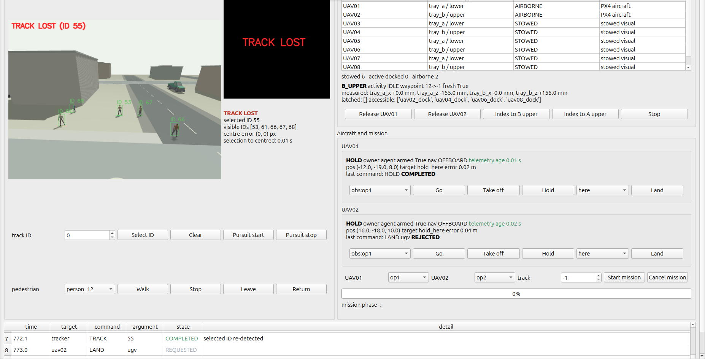
LAND ugv) was REJECTED and uav01's HOLD COMPLETED;Shutdown and relaunch (measured).
stop_all.sh stops components in reverse order using PID files (Ctrl+C first, then SIGTERM, then SIGKILL, with child processes first). It also stops this workspace's Gazebo server and GUI and the PX4 processes whose working directory is under this workspace's log folder. Other simulations on the machine are left alone.sim_all.sh was ready again with both latches attached and fresh telemetry. The one-command start completed the full mission (run simall1).Troubleshooting.
scripts/make_release.sh 1.0.0 # release/tins8-course-1.0.0.tar.gz, plus .sha256; MANIFEST.sha256 inside the archive
scripts/setup_deps.sh at pinned commits.scripts/build.sh, the unit tests run, the launch files parsed, and the asset checksums compared with MANIFEST.sha256. Section 11 gives the environments actually used.| requirement | status | evidence |
|---|---|---|
| 8 fleet positions, 2 PX4 aircraft, 6 stowed, each active aircraft shown once | done | fleet state and GUI (Figure 9); Section 6.2 |
| Fieldlab world native in Gazebo, no browser, no absolute paths | done | world_check.md: 51 objects within 0.001 m; Figures 2 and 3 |
| Guarded slide exchange gated on measured joints | done | 12 waypoints, 57 s; interlocks, STOP and resume |
| UGV teleoperation | done | 3.7 m forward, turn, stable roll and pitch |
| uav01 to op1 and hold; select by ID; inset; track lost without switching; hold logged | done | mission1: 0.25 s to centred, 845/845 correct, drift 0.000 m |
| Inspection waypoint demonstration | done | wp_bus_stop, error 0.16 m, hold |
| uav02 to op2; telemetry freshness; command isolation | done | telemetry age at most 0.33 s; isolation 4/4 |
| Mission action with progress and cancel | done | mission1, ops1, simall1 |
| Landing cases distinguished | ground pad done; UGV and re-stowage not implemented (rejected with the reason) | ops1 |
| High-speed IBVS pursuit (YOLOX boxes), at least 20 Hz, floor, standoff, loss failsafe | done in simulation | pursuit7, Section 8.2 |
| Terminal tool and GUI on the same interfaces with all states | done | Section 9, Figure 9 |
| One-command start, per-component commands, tabs, shutdown, relaunch | done (tmux mode untested) | Section 9 |
| Release archive, manifest, credits, checksum; clean-clone test | see the handoff note | Section 10 |
| operation | command |
|---|---|
| status of fleet, carousel, both aircraft, tracker | tins8ctl status (tins8ctl watch streams the command log) |
| carousel | tins8ctl carousel index-b | index-a | stop | release uav01 |
| one aircraft | tins8ctl uav uav01 takeoff | obs op1 | goto wp_bus_stop | hold | land [here|pad_west|pad_east|ugv|restow] |
| select or clear the tracked person | tins8ctl select 12, tins8ctl select clear |
| pursuit | tins8ctl pursuit uav01 start 12, tins8ctl pursuit uav01 stop |
| scripted walkers | tins8ctl actor person_12 walk | stop | leave | return |
| mission | tins8ctl mission start [--uav1 op1] [--uav2 op2] [--track N], tins8ctl mission cancel |
| UGV teleoperation | tins8ctl teleop |
| wait for the end state of any request | add --wait, e.g. tins8ctl --wait uav uav02 obs op2 |
| shutdown | tins8ctl shutdown or scripts/stop_all.sh |
| analysis of a run | python3 scripts/analyze_run.py log/runs/<run> |
| world check | python3 scripts/world_check.py |